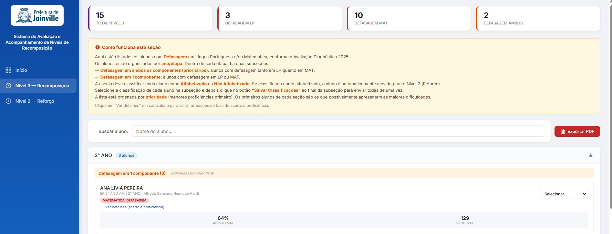

Contexto e Problema
A partir de avaliações diagnósticas e somativas que revelaram lacunas significativas de aprendizagem, a Secretaria de Educação de Joinville implementou um programa de recomposição de aprendizagens destinado a estudantes com defasagens acadêmicas expressivas. A gestão desse programa demandava um painel de monitoramento capaz de acompanhar a participação dos alunos, medir o progresso nas atividades de recuperação e gerar relatórios acionáveis para gestores escolares.
Imagens do Sistema



Solução Desenvolvida
Construí um dashboard de gestão web com os seguintes componentes:
- Backend (Google Apps Script): Servidor com camada de serviço de dados (DataService.js) para todas as operações de dados e lógica de negócio (Code.js)
- Interface web responsiva: Sistema de login, navegação por sidebar, dashboard com KPIs, busca e filtragem de alunos, e diálogos modais para visualizações detalhadas
- Pré-processamento de dados: Script Node.js (preprocessar.js) para parsing de CSVs e preparação de dados via Google APIs
- Geração de relatórios PDF: Integração com jsPDF e jspdf-autotable para geração automatizada de relatórios com tabelas formatadas, exportáveis por escola
- Acompanhamento de progresso: Gestão de atividades com monitoramento de participação e visualização de progresso individual do aluno
Bases de Dados Utilizadas
- Registros de alunos identificados para recomposição
- Dados de atividades e acompanhamento de progresso
- Registros de desempenho acadêmico
Tecnologias Utilizadas
Resultados e Impacto
O dashboard forneceu à equipe gestora da Secretaria de Educação uma visão integrada do programa de recomposição, viabilizando o monitoramento em tempo real da participação dos estudantes e do progresso das atividades de recuperação. A geração automatizada de relatórios PDF simplificou a comunicação com as equipes escolares e apoiou o acompanhamento individualizado dos alunos em recomposição, contribuindo para a efetividade das ações de recuperação de aprendizagens da rede municipal.